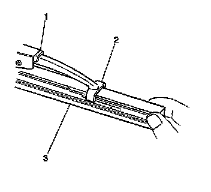

Wiper Blade Element Replacement
Wiper Blade Element Replacement
Removal Procedure

Important: Replace the wiper blade element if it is removed from the wiper blade.
1. Remove the wiper blade from the wiper arm. Refer to Windshield Wiper Blade Replacement (Windshield Wiper Blade Replacement) .
2. Remove the bottom claws (2) of the wiper blade (1) from the notches in the wiper blade element (3).
3. Pull the wiper blade element (3) out through the wiper blade claws (2).
Installation Procedure
Important: Keep the wiper blade claws in the rubber claw channel of the wiper blade element. Do not allow the claws of the wiper blade to contact the metal spline of the wiper blade element.
1. Insert the open end of the wiper blade element (3) into the bottom claws of the wiper blade (2).
2. Guide the wiper blade element (3) through the wiper blade (1) claw sets.
3. Engage the bottom claw (2) of the wiper blade (1) into the notches in wiper blade element (3).
4. Install the wiper blade onto the wiper arm. Refer to Windshield Wiper Blade Replacement (Windshield Wiper Blade Replacement) .